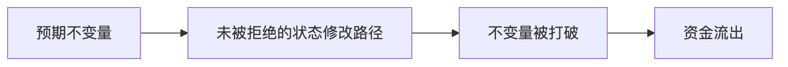
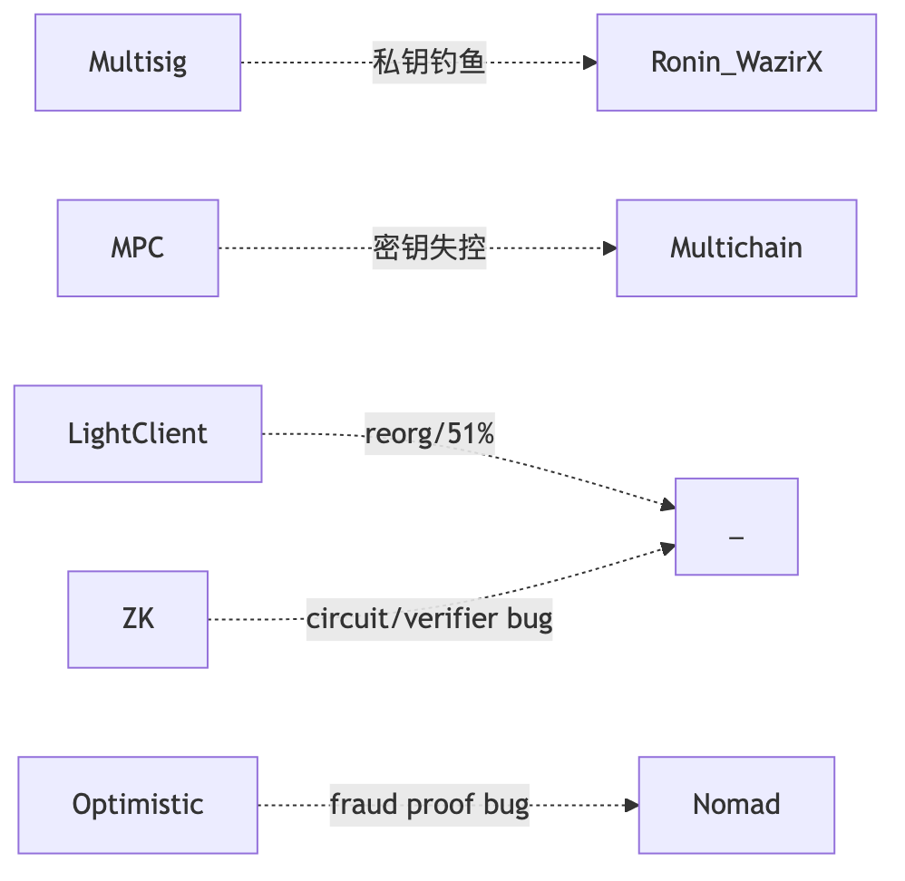

Web3 工程师学习指南
智能合约安全
12 类漏洞、审计工具、真实事故复盘
Web3 Engineer Guide
读完基础 Solidity 即可上手。目标：识别 6 大漏洞家族，写可被审计的代码。文献截至 2026-04-27，金额按事件当日 USD 计价。
Chapter 01
2016-06-17 · The DAO · 6000 万美元 ——一个 30 行合约把以太坊劈成 ETH / ETC 两条链。2022-03-29 · Ronin Bridge · 6.25 亿美元 ——5/9 个签名节点被钓鱼，桥被搬空。2025-02-21 · Bybit · 14.6 亿美元 ——前端供应链 + 盲签，三个钱包人按下了"确认"。2025-05-22 · Cetus（Sui）· 2.23 亿美元 ——一行 shift wrap，AMM 报价被改写。
四起事件横跨十年、跨越四类攻击家族，共同点只有一个：链上没有客服，bug 直接是损失 。完整年表见 §0.5。
承上 ：模块 04 让你能写 Solidity，本模块教你写对 。能写不等于能扛住攻击。
0.1 TL;DR / 学习目标 / 前置 / 导览
漏洞章节统一四段式：TL;DR → 钩子 → 漏洞描述+PoC → 修复 。主线 ≤ 30 页 PDF。
章
标题
一句话
1
安全心法
攻击者三问 / 不变量思维
2
重入家族
CEI + nonReentrant；read-only 简版
3
价格操纵 / Oracle 滥用
spot→TWAP；Chainlink 4 项检查
4
访问控制 / 升级安全
initialize guard；盲签防御；Bybit 故事
5
签名重放 / EIP-712 钓鱼
5W nonce；Permit2 防御
6
整数 / 精度 / Inflation
overflow；ERC4626 虚拟份额；shift wrap
7
跨链桥 / DA 风险（直觉）
桥 = 信任最弱环；blob 拥堵
8
安全开发 5 条铁律
CEI / 最小权限 / 不变量 / 监控 / Clear Signing
9
Slither + forge test 入门
30 秒扫描；invariant test 骨架
故事 1
The DAO（2016）
第一次重入硬分叉
故事 2
Bybit $1.46B（2025）
S3 供应链 + 盲签
附录 A
12 类漏洞详细分类
SWC 全谱
附录 B
Halmos / Echidna / Certora 配置
形式化验证详情
附录 C
Bybit 完整复盘
攻击链逐分钟
附录 D
其余真实事件 postmortem
Wormhole / Nomad / Beanstalk …
附录 E
审计流程模板
STRIDE-DeFi / Actor Map / 报告
附录 F
形式化验证深入
Certora CVL / SMTChecker
附录 G
重入的形式化定义
CEI 时序冲突的数学表达
Chapter 02
时间
事件
损失 (USD)
攻击家族
2016-06-17
The DAO 6000 万
重入（§故事1）
2022-03-29
Ronin Bridge #1 6.25 亿
跨链桥·私钥钓鱼
2022-10-11
Mango Markets 1.16 亿
Oracle·现货拉盘
2023-07-30
Curve / Vyper 0day 7000 万
重入·编译器层
2023-11-22
KyberSwap Elastic 4700 万
整数·tick 边界精度
2024-05-14
Sonne Finance 2000 万
精度·ERC4626 inflation
2024-09-03
Penpie / Pendle 2735 万
重入·跨合约
2024-10-16
Radiant Capital 5300 万
访问控制·盲签
2025-02-21
Bybit 14.6 亿
访问控制·S3供应链（§故事2）
2025-05-22
Cetus（Sui） 2.23 亿
整数·shift wrap
从 2024 起，人因（私钥被钓 / UI 被劫 / 内鬼）损失已远超合约层 bug。完整年表见附录 D。
Chapter 03
TL;DR ：代码即结算，bug 即损失，没有客服。攻击者只问三个问题，漏洞本质是找到打破不变量但合约不 revert 的路径。
钩子 ：2016 年 6 月 17 日，The DAO 合约里 6000 万美元被 36 笔相同的 withdraw 抽走。社区 72 小时后硬分叉——今天的 ETH 是"赖账分支"，ETC 是"我认账"那条。一个 30 行合约改写了整个生态的公司法 。
前置依赖：04-Solidity 的 storage layout、delegatecall、call 语义、gas 模型。
1.1 攻击者只问三个问题
谁能动这笔钱？ （access control / signature / proxy admin）价格是怎么算的？ （oracle / accounting / share price）状态在什么时候被信任？ （reentrancy / atomicity）
SWC Registry 37 类漏洞都是这三问的排列组合。
1.2 攻击者经济学（Web3 独有）
TVL 即赏金池 ：协议 TVL 决定攻击上限。闪电贷把资本成本归零 ：同一笔 tx 借还，只需支付约 0.05%（Aave V3）的手续费；Uniswap V3 没有独立闪电贷原语，是 flash() callback，费率 = 该池 swap fee tier（0.05/0.3/1%），攻击门槛趋近于零。赎金博弈 ：Euler 归还 1.97 亿，10% bounty 即可触发谈判。DPRK 国家级威胁 ：Bybit 14.6 亿（FBI ），愿意烧 6 个月做长线社工。
1.3 不变量思维
不变量 = 任何合理状态下恒为真的命题，与调用序列无关。
ERC20：sum(balances) == totalSupply，transfer 不改 totalSupply。
借贷：totalDebt ≤ totalCollateral × maxLTV；healthFactor < 1 ⇒ 可清算。
漏洞 = 找到打破不变量但合约不 revert 的路径。 写出 invariant → fuzz/形式化证明 → 找到漏掉的状态修改路径。

Chapter 04
本节是重入主讲（漏洞 + PoC + 真实案例）；CEI 模式直觉补充见模块 04 §8.1
TL;DR ：call 把执行权交出去，对方可以回调你。状态没更新时被回调 = 重入。修复：CEI 顺序 + nonReentrant。read-only 重入是 view 函数读到脏状态用于定价。
钩子 ：银行柜员把钱递出去之后才在账本上划掉余额——你拿到现金，转身又排队，账本说"你还有 1 ETH"，柜员说"好的，再来一份"。重入就是这种"趁柜员转身的瞬间二次取款"。The DAO 2016 年用这招抽走 6000 万；Curve Vyper 编译器 2023 年被同招换皮，赔进去 7000 万。
2.1 漏洞描述
call 是执行权移交。对方拿到 CPU 可反调你，此时"未更新的状态"在他眼里仍是真的。一句话总结：重入 = 状态可观察性与状态正确性的时序冲突 ——你已经把钱转出去了，但账本还没改，对方就趁这个空档再来一次。
形式化定义见附录 G。
四个变种：① 单函数（The DAO）；② 跨函数（共享 storage 但锁不同）；③ 跨合约（ERC-777/1155/721 receive hook）；④ 只读（view 函数读到脏状态用于定价）。
2.2 PoC
场景 ：Alice 部署了一个看似正常的 ETH 金库 VulnerableBank，存款 1 ETH 后可以随时 withdraw 拿回。Bob 写了一个攻击合约 ReentrancyAttacker，存进去 1 ETH，但他的 receive 函数会在收到钱的瞬间再次调 withdraw——金库还没来得及把账上余额清零，又掏出 1 ETH。这样一直递归下去，直到金库被掏空。
漏洞合约：
function withdraw () external {
uint256 bal = balances[ msg.sender ];
require ( bal > 0 , "no balance" );
( bool ok , ) = msg.sender . call{ value: bal}( "" );
require ( ok, "send fail" );
balances[ msg.sender ] = 0 ; // 状态更新晚于外部调用
}
攻击合约：
contract ReentrancyAttacker {
VulnerableBank public immutable bank;
constructor ( VulnerableBank _bank) payable { bank = _bank; }
function pwn () external payable { bank. deposit{ value: 1 ether}(); bank. withdraw(); }
receive() external payable {
if ( address ( bank). balance >= 1 ether) bank. withdraw();
}
}
完整代码：code/vulnerable/Reentrancy.sol、code/attack/ReentrancyAttack.sol、code/test/Reentrancy.t.sol。forge test --match-contract ReentrancyTest -vvv。
2.3 影响
事件
日期
损失
子类
The DAO
2016-06-17
约 360 万 ETH（当时约 5500 万美元）
单函数 → ETH/ETC 硬分叉
Lendf.Me
2020-04-19
2500 万美元
跨函数（imBTC ERC-777 hook）
Cream Finance
2021-08-30
1900 万美元
跨合约（AMP ERC-777）
dForce
2023-02
3700 万美元
只读（Curve get_virtual_price，CertiK ）
Curve（Vyper 0day）
2023-07-30
7000 万美元
编译器层（见 §2.5）
Penpie / Pendle
2024-09-03
2735 万美元
跨合约（Halborn ）
2.4 修复
修复 1：CEI 顺序
function withdraw () external nonReentrant {
uint256 bal = balances[ msg.sender ];
require ( bal > 0 , "no balance" );
balances[ msg.sender ] = 0 ; // Effect
( bool ok , ) = msg.sender . call{ value: bal}( "" ); // Interact
require ( ok, "send fail" );
}
修复 2：跨函数 / 跨合约 ——所有改 storage 的 external 函数共用同一 nonReentrant；接收 ERC-777/1155 token 视为 untrusted；router/comptroller 层加协议级锁。
修复 3：只读重入 ——OZ 5.x 用 _reentrancyGuardEntered() 让 view 也能 revert；调用前先 withdraw(0) 强制结清；价格用 TWAP 不用 spot。
修复 4：Transient storage（EIP-1153，Cancun，OZ 5.1 ReentrancyGuardTransient） ——单 tx 内 lock 自动清，gas ~5000 → ~200：
modifier nonReentrant() {
assembly { if tload( ENTERED_SLOT) { revert( 0 , 0 ) } tstore( ENTERED_SLOT, 1 ) }
_;
assembly { tstore( ENTERED_SLOT, 0 ) }
}
注意：transient storage 在同一 tx 内跨子调用共享 （lock 前提，也是 nested call slot 碰撞污染源——见 04 模块 §1.7.1）；分多 tx 的 batch（如 Pendle）仍需 storage lock。
2.5 变体速览
变体
核心差异
代表事件
跨函数
两函数共享 storage 但锁不同
Lendf.Me ERC-777 hook
跨合约
ERC-777/1155 receive 钩子回调
Penpie 2735 万
只读（read-only）
view 函数读脏 reserves 用于定价
dForce 3700 万
编译器层
Vyper 0.2.15-0.3.0 同名 lock 计算出不同 slot
Curve 7000 万
只读重入修复 ：OZ 5.x 用 _reentrancyGuardEntered() 让 view 也能 revert；价格优先用 TWAP 而非 spot。
编译器层变体和 Phantom Function 详见附录 A。
Chapter 05
TL;DR ：直接读 DEX getReserves() 作价格，闪电贷一笔 swap 拉任意比例。修复：TWAP ≥ 30min + Chainlink 4 项检查。池子流动性 / 受害协议 TVL < 0.5% 时攻击必盈利。
钩子 ：2022 年 10 月，Eisenberg 跨两账号合计约 $10M USDC 起手，把 MNGO 现货价在 20 分钟内拉了 11 倍，再抵押这堆"账面浮盈"借走金库 1.16 亿美元——估值用的就是他刚拉爆的那个价格。他叫这"高度盈利的交易策略"。Oracle 操纵的本质：给协议看一个你单方面捏造的"市场价" 。
3.1 漏洞描述
直接读 DEX getReserves() 作价格 → 闪电贷一笔 swap 拉任意比例。Uniswap V2 invariant $x \cdot y = k$，投入 $\Delta x$ 后：
$$
p' = \frac{xy}{(x+\Delta x)^2}
$$
把价格拉 $k\times$ 所需资本 $\Delta x = (\sqrt{k}-1) \cdot x$；闪电贷把资本成本归零，只剩 V2 0.3% 手续费 $0.003\Delta x$。池子流动性 / 受害协议 TVL < 0.5% 时攻击必盈利 。
四类失效模式：① spot 估值；② TWAP 窗口太短（短期 depeg / 多块持续攻击）；③ Chainlink 缺 staleness/answer > 0 检查；④ Median oracle 大多数源可操纵（UwU Lend：11 源中 5 个 Curve 池可控，扰动 6 个即可）。
3.2 PoC
场景 ：协议方部署了一个借贷合约 VictimLending，抵押品估值直接读某个低流动 DEX 的 spot reserves。攻击者从 Aave 闪电贷 10 亿 USDC，去那个池子里把 MNGO 价格拉 10 倍，再去借贷合约抵押 MNGO 借走金库里全部资产，最后回头把 MNGO 卖掉、还闪电贷——一切发生在同一笔交易里。
sequenceDiagram
participant A as Attacker
participant L as Aave (闪电贷)
participant D as DEX (低流动)
participant V as Victim Lending
A->>L: flashLoan(1B USDC)
A->>D: swap → MNGO，spot price 10x
A->>V: deposit MNGO; borrow ALL（V 读 D spot）
A->>D: swap MNGO back; A->>L: repaydiagram render failed:
Error: Parse error on line 8:
...rrow ALL（V 读 D spot） A->>D: swap MNG
-----------------------^
Expecting '()', 'SOLID_OPEN_ARROW', 'DOTTED_OPEN_ARROW', 'SOLID_ARROW', 'SOLID_ARROW_TOP', 'SOLID_ARR 漏洞合约（code/vulnerable/Oracle.sol）：
function spotPrice () public view returns ( uint256 ) {
( uint112 r0 , uint112 r1 , ) = pricePair. getReserves();
return uint256 ( r1) * 1 e18 / uint256 ( r0);
}
function borrow ( uint256 amt ) external {
uint256 collValueInDebt = collateralBal[ msg.sender ] * spotPrice() / 1 e18;
require ( debtBal[ msg.sender ] + amt <= collValueInDebt * 7500 / 10 _000, "LTV" );
}
3.3 影响
事件
日期
损失
关键技术
bZx #1
2020-02-15
35 万美元
第一例闪电贷 + spot
Harvest Finance
2020-10-26
3400 万美元
Curve y pool spot 估值
Cream Finance
2021-10-27
1.3 亿美元
yUSD vault 估值（Halborn ）
Mango Markets
2022-10-11
1.16 亿美元
MNGO/USDC 现货拉盘借自己（CFTC ；2025-05 联邦法官撤销刑事判决，TRM ）
Inverse Finance
2022-04-02
1560 万美元
INV/DOLA TWAP 短窗
UwU Lend
2024-06-10
2300 万美元
11 源 median 过半数 Curve 池（QuillAudits ）
Compound DAI 闪现
2020-11
9000 万美元清算
Coinbase Pro 单源 + 无 circuit breaker
3.4 修复
修复 1：Chainlink push oracle ——4 项必检（code/patched/Oracle.sol）：
function safePrice () public view returns ( uint256 ) {
( uint80 rid , int256 ans , , uint256 updatedAt , uint80 answeredIn ) = feed. latestRoundData();
if ( ans <= 0 ) revert BadPrice(); // ① 负 / 零价
if ( answeredIn < rid) revert StalePrice(); // ② roundId 一致性检查——answeredInRound < roundId 表示 stale（Chainlink V3 后 answeredInRound 已 deprecated，常 = roundId；保留检查为兼容旧 feed）
if ( block.timestamp - updatedAt > heartbeat) revert StalePrice(); // ③ 新鲜度（ETH/USD 3600s, USDC/USD 86400s）
return uint256 ( ans) * 10 ** ( 18 - feed. decimals()); // ④ decimals 归一
}
注：Aave V3 CLSynchronicityPriceAdapter 已弱化 answeredInRound，新代码以 updatedAt + answer > 0 为主。
修复 2：TWAP ——Uniswap V3 observe() 取 ≥ 30min 累积 tick；持续操纵每块 0.3% 手续费 + 套利反推，总成本约 $\Delta x$ 量级，不再免费。TWAP 不防短期 depeg，需配合 deviation 熔断 。
修复 3：Pyth pull oracle ——必用 getPriceNoOlderThan(feedId, 60)，过滤 conf 区间（conf/price < 1%，* 100 是常用阈值；* 10000 在 thin liquidity 时段会全部 revert）。
修复 4：架构层 ——① 长尾资产降低 LTV 上限；② Median oracle 至少 (n/2)+1 源攻击成本独立；③ deviation > X% 熔断走 keeper；④ 监控 §17.7。
操纵成本工具：DefiLlama Pool Liquidity 、Tenderly Simulator 、fork mainnet swap 测前后差异。
Chapter 06
TL;DR ：四问——谁能调？谁能改 owner？owner 是否被盗？升级后状态是否一致？修复：_disableInitializers() + Timelock ≥ 48h + Clear Signing。
钩子 ：2025-02-21 14:13 UTC，Bybit 运维例行签一笔 ETH 调度。Ledger 屏幕上是一串十六进制——他签了。三秒后 401,000 ETH（14.6 亿美元）流向陌生地址。人类历史上单次最大金额抢劫 。漏洞不在合约，在 S3——Lazarus 提前数月钓鱼 Safe 工程师，把恶意 JS 注入 app.safe.global 的 S3 桶。访问控制的边界从 onlyOwner 一路延伸到 AWS IAM 和招聘流程。
4.1 漏洞描述
四个核心问题：谁能调？谁能改 owner？谁验证 owner 没被偷？升级后状态是否一致？
四类失效：① init 无 onlyOnce / 无 guard（Parity 1）；② library 未 init 任意人 init 后 kill（Parity 2）；③ proxy admin slot 被 deployer 劫持（Munchables）；④ 多签 UI 钓鱼 + Ledger 盲签（Bybit / WazirX / Radiant）；⑤ 升级未运行 initialize 致 vote weight=0（Ronin #2）。
// 失效模式速查
function init ( address _admin ) external { admin = _admin; } // ① 任何人 / 多次
contract Logic { constructor ( address _a ) { admin = _a; } } // ② proxy 不调 constructor
function destroy () external { selfdestruct( payable ( msg.sender )); } // ③ 暴露 selfdestruct
mapping ( address => bool ) public isAdmin; // ④ 不可枚举不可 revoke
4.2 PoC
场景 ：Alice 团队部署了一个 UUPS proxy，背后是 VulnerableProxyImpl。他们写了 init(admin) 但忘了加 onlyOnce 守卫——心想"反正部署脚本会先调一次，没人能再调第二次"。devops199 这位仁兄在 GitHub 上看到了这个合约，一晚上之后他直接调 init(他自己)，再调 selfDestructIt()——5.14 亿美元的 ETH 永远卡在了一个不存在的 implementation 后面。这就是 Parity Multisig 2 的剧本（CNBC 报道 ）。
// 漏洞（code/vulnerable/AccessControl.sol）
contract VulnerableProxyImpl {
address public admin ;
function init ( address _admin ) external { admin = _admin; } // 任意人 init
function selfDestructIt () external {
require ( msg.sender == admin, "not admin" );
selfdestruct( payable ( msg.sender ));
}
}
4.3 影响
事件
日期
损失
模式
Parity Multisig 1
2017-07-19
3000 万美元
initWallet 暴露给所有人
Parity Multisig 2
2017-11-06
1.55 亿（51.4 万 ETH 永冻）
library 未 init → devops199 init 后 kill（CNBC ）
Audius
2022-07-23
600 万美元
proxy storage hijack
Munchables
2024-03-26
6250 万（已归还）
内鬼 DPRK deployer + proxy 储槽（CoinDesk ）
WazirX
2024-07-18
2.35 亿美元
Liminal UI 篡改 + 盲签
Ronin #2
2024-08-06
1200 万（white hat）
v3 升级 initialize 未跑 / _totalOperatorWeight=0 致 0 票通过
Radiant Capital
2024-10-16
5300 万美元
multisig 私钥 + UI 篡改
Bybit
2025-02-21
14.6 亿美元（401k ETH）
Safe{Wallet} S3 供应链 + 盲签（详见 §4.5）
4.4 修复
contract SafeProxyImpl is Initializable {
address public admin ;
constructor () { _disableInitializers(); } // implementation 永远不能被 init
function initialize ( address _admin ) external initializer { admin = _admin; }
// 故意不写 selfdestruct
}
8 条防御清单：
OZ Initializable + _disableInitializers() （implementation constructor）。角色分离 + AccessControlEnumerable ：deployer ≠ owner ≠ pauser ≠ feeReceiver。Timelock ≥ 48h ：所有 admin 操作走 onchain queue。冷热分离 ：hot wallet 只动小额，大额走 timelock。Clear Signing ：硬件钱包必须能解码 calldata；不解码不签。复核工具：Tenderly Simulator 、calldata.swiss-knife.xyz 、openchain.xyz 。前端供应链入审计 scope ：build pipeline / CDN bucket / npm 包（Bybit 教训）。升级后状态校验 ：onchain state 与预期一致，否则自动暂停（Ronin #2 教训）。EIP-6780（Cancun）≠ 安全网 ：selfdestruct 在非创建 tx 只清 ETH 余额，但 Munchables 证明 deployer 可直接改 implementation 改 storage——selfdestruct 限制不能让你忽略 deployer/admin 权力 。
4.5 Bybit 案完整攻击链（2025-02-21，14.6 亿美元）
（本故事横跨签名钓鱼 + 多签 AC + 供应链——签名钓鱼细节见 §5）
来源：Sygnia 、Wiz 、FBI IC3 PSA 250226 、NCC Group 、BleepingComputer 。
timeline
title Bybit Heist（DPRK / TraderTraitor / UNC4899）
数月前 : 假招聘 + 钓鱼 macOS dev → Safe{Wallet} 一名 Developer (Developer1)，攻击者拿到其 AWS session token 直接侵入 Safe AWS 基础设施
2025-02-04 : macOS RAT 持久化
2025-02-17 : AWS C2 上线
2025-02-19 15:29 UTC : 替换 app.safe.global S3 JS（仅对 Bybit cold wallet 生效）
2025-02-21 14:13 UTC : Bybit 运维签"调度 tx"，Ledger 显示 hex，多签通过 → 401k ETH 流出
2025-02-21 14:15 UTC : S3 JS 复原（抹痕）
2025-02-26 : FBI 归因 TraderTraitor / Lazarus
2025-03-20 : 86.29% ETH 已洗成 BTC（Ben Zhou 确认）diagram render failed:
Error: Parse error on line 6:
...上线 2025-02-19 15:29 UTC : 替换 app.saf
----------------------^
Expecting 'EOF', 'SPACE', 'NEWLINE', 'title', 'acc_title', 'acc_descr', 'acc_descr_multiline_value', ' 攻击面（按层） ：① DPRK 假面试木马；② macOS 开发机被持久化拿到 AWS 凭证；③ S3 JS 不签名不校验完整性；④ 恶意 JS 仅对 signerAddress === BYBIT_COLD_WALLET 生效；⑤ Ledger 不解析 Safe execTransaction 嵌套 calldata，运维盲签；⑥ tx 后 2 分钟 JS 复原。
结构性缺陷 ：① 前端完整性不在传统威胁模型；② Safe execTransaction 嵌套 calldata × Ledger 5 行屏幕 = 盲签必然；③ DPRK 愿烧 6 个月做长线社工。
社区响应 ：Safe 强制 transactionGuard + Tenderly Simulator；Ledger 推 Clear Signing；交易所改 Fireblocks/Copper 独立验证终端；WalletConnect transaction risk score 插件。
Chapter 07
本节聚焦签名钓鱼防御；EIP-712 字段 + 前端实现见模块 10 §6
TL;DR ：签名安全 = 5W：Who + What + Where（chainId+verifyingContract）+ When（deadline）+ Why-not-twice（nonce）。缺一 = 重放或仿冒。
钩子 ：2024 年深夜，PEPE 持有者在"Uniswap 克隆站"签了一个不需要 gas 的签名，钱包提示"无 tx 上链，安全"。三分钟后 139 万美元消失。用户以为"不上链 = 不花钱"，但链上把签名等同于盖章授权 。Permit2 让这条攻击链完全链下——2024 年全年 Permit 钓鱼累计 > 3 亿美元（ScamSniffer）。
5.1 漏洞描述
签名安全 = 5W ：Who（signer）+ What（typed struct）+ Where（domain：chainId+verifyingContract）+ When（deadline）+ Why-not-twice（nonce）。缺一漏一。
四类坑：① 重放（跨链/合约/时刻）；② 0 地址陷阱（ecrecover 失败时返回 address(0)，若 signer = address(0) 则任意签名通过）；③ malleability（ECDSA $(r,s)$ 与 $(r,n-s)$ 等价，EIP-2 要求 $s < n/2$）；④ EIP-712 误用（缺 chainId/verifyingContract）。
5.2 PoC
sequenceDiagram
participant V as 受害者
participant F as 钓鱼站
participant A as 攻击者
participant T as ERC20(permit)
F->>V: signTypedData(permit, owner=V, spender=A, value=MAX)
V-->>F: sig（无 tx 上链，钱包不警告）
F->>A: 转发 sig
A->>T: permit(V, A, MAX, sig); transferFrom(V, A, balance)diagram render failed:
Error: Parse error on line 9:
...sig); transferFrom(V, A, balance)
-----------------------^
Expecting '()', 'SOLID_OPEN_ARROW', 'DOTTED_OPEN_ARROW', 'SOLID_ARROW', 'SOLID_ARROW_TOP', 'SOLID_ARROW_BOT 漏洞合约（code/vulnerable/Signature.sol）：
function claim ( uint256 amount , uint8 v , bytes32 r , bytes32 s ) external {
bytes32 h = keccak256 ( abi. encodePacked( msg.sender , amount));
bytes32 ethHash = keccak256 ( abi. encodePacked( "\x19Ethereum Signed Message:\n32" , h));
address recovered = ecrecover( ethHash, v, r, s);
require ( recovered == signer, "bad sig" ); // 缺 nonce/deadline/chainId/合约地址/s 低半区
token. transfer( msg.sender , amount);
}
若 signer == address(0) 部署失误：claim(任意 amount, 0, 0, 0) → ecrecover(...) == address(0) == signer → 任意人 mint。code/test/Signature.t.sol::test_ZeroSignerIsExploitable 验证攻击 500 ether。
5.3 影响
事件
日期
损失
模式
Poly Network
2021-08-10
6.11 亿美元
keeper pubkey 替换 + 跨链签名
MonoX
2021-11-30
3100 万美元
swap from==to
Wormhole
2022-02-02
3.2 亿美元
Solana sysvar 校验绕过（详见 §10.2）
BNB Bridge
2022-10-06
5.7 亿美元
merkle proof 伪造
PEPE Permit2 钓鱼
2024-09
139 万美元 / 笔（Decrypt ）
EIP-2612/Permit2 链下签名
fwdETH Permit2 钓鱼
2024-10
15,079 fwdETH（约 3600 万）
同上
全年 Permit/Permit2 钓鱼
2024
> 3 亿美元（ScamSniffer 累计）
链下签名
5.4 修复
5 道防线（code/patched/Signature.sol）：
contract SafeClaim is EIP712 {
bytes32 private constant CLAIM_TYPEHASH =
keccak256 ( "Claim(address user,uint256 amount,uint256 nonce,uint256 deadline)" );
constructor ( IERC20 _t, address _signer ) EIP712( "SafeClaim" , "1" ) {
require ( _signer != address ( 0 ), "zero signer" ); // ⑤ 拒 0 地址
signer = _signer;
}
function claim ( uint256 amount , uint256 deadline , bytes calldata sig) external {
if ( block.timestamp > deadline) revert Expired(); // ③ deadline
uint256 nonce = nonces[ msg.sender ] ++ ; // ② per-user nonce
bytes32 structHash = keccak256 ( abi. encode( CLAIM_TYPEHASH, msg.sender , amount, nonce, deadline));
bytes32 digest = _hashTypedDataV4( structHash); // ① EIP-712 domain (chainId+verifyingContract)
if ( digest. recover( sig) != signer) revert BadSigner(); // ④ OZ ECDSA 拒高半区+0地址
token. transfer( msg.sender , amount);
}
}
跨链协议：把目标 chainId 编码进签名内容。前端：永远不让用户盲签 hex calldata。
permit 跨链重放：fork 后 chainId 变更，DOMAIN_SEPARATOR 缓存失效；OZ ERC20Permit 用 _buildDomainSeparator 自动重建。
Permit2 钓鱼专项防御 ：Permit2 把"approve 一次给 Permit2、之后签名授权第三方"标准化，但把钓鱼链路从"approve tx"变成"off-chain 签名"，用户感知更弱。
- 用户：revoke.cash 撤 unlimited allowance；钱包升级到 Rabby / Frame / Coinbase（已解析 Permit2）；装 ScamSniffer / WalletGuard。
- 协议：前端 router 调用前询问"绑定到此次 swap 的 amount"，不默认 unlimited；签名展示"允许 X 在 Y 之前转走 Z"。
Chapter 08
TL;DR ：金额算法三问——① round 方向向协议还是用户？② 先乘后除（先除丢精度）？③ 单位是否统一（1e18 vs 1e6）？修复：Solidity ≥ 0.8 + unchecked 加注释 + ERC4626 虚拟份额。
钩子 ：2025 年 5 月，Cetus DEX 审计过、上线一年——攻击者写了一个 x << n，让 u256 静默回绕，1 枚 token 换走了池子里的全部资产 ，损失 2.23 亿。算术 bug 没有戏剧性的重入循环，就是一个被忽略的边界条件安静地等在那里。
6.1 漏洞描述
金额算法三问：① 方向 ——round 向协议还是用户？② 顺序 ——先乘后除（先除丢精度）；③ 单位 ——1e18 vs 1e6 vs 1e8。
四类失效：① 整数溢出（pre-0.8、unchecked、uintN(x) 截断、assembly）；② ERC4626 inflation（首笔 deposit + donate 抬单价吞 victim）；③ 边界精度不一致（KyberSwap Elastic：calcReachAmount ≠ calcFinalPrice，swap=boundary-1 时 liquidity 不减）；④ 大类型 shift wrap-around（Cetus checked_shlw u256 左移静默回绕）。
6.2 PoC：ERC4626 Inflation
场景 ：Alice 部署了一个 ERC4626 收益金库，预期用户存 USDC、按 share 分润。第一个进来的不是用户，是攻击者 Bob——他存 1 wei 拿到 1 share，然后直接 transfer 10 万 USDC 到金库地址 （没经过 deposit）。现在金库里：1 share 对应 100,000 USDC + 1 wei。受害者 Carol 存 5 万 USDC，按 floor(50000e18 * 1 / 100000e18) = 0 算，她一股都拿不到 ——但她的钱已经进了金库。Bob 从容地 redeem(1) 把全部 15 万 USDC 拿走。这不是 bug 是数学——首笔 deposit 的 share 单价完全由 attacker 操控，受害者只是数学题里被四舍五入掉的小数。
ERC4626 基本汇率 $\text{shares} = \text{assets} \cdot \text{totalShares} / \text{totalAssets}$，首笔 deposit 时 totalShares=0 走特例：
PoC：code/vulnerable/Vault4626.sol + code/attack/Vault4626Attack.sol；forge test --match-test test_NaiveVault_inflationKillsVictim。
6.3 影响
事件
日期
损失
子类
BeautyChain BEC
2018-04
凭空铸天文数字
pre-0.8 整数溢出 value * len（SECBIT ）
Euler Finance
2023-03-13
1.97 亿（已归还）
donateToReserve + self-liq 舍入
KyberSwap Elastic
2023-11-22
4700 万美元
tick 边界精度不一致（Halborn ）
Sonne Finance
2024-05-14
2000 万美元
Compound v2 fork dead shares 不够（Halborn ）
Cetus（Sui）
2025-05-22
2.23 亿美元
checked_shlw u256 wrap-around，1 token → $10^{37}$ liquidity（BlockSec ）
6.4 修复
修复 1：Solidity ≥ 0.8.x 默认 overflow check ；unchecked 块每个写注释证明安全；uintN(x) 截断 / assembly 仍无检查需手动 require。
修复 2：ERC4626 virtual shares + decimals offset （OZ 5.x，blog ）：
function _convertToShares ( uint256 assets ) internal view returns ( uint256 ) {
return ( assets * ( totalShares + 10 ** DECIMALS_OFFSET)) / ( totalAssets() + 1 );
}
vault 创建即有 $10^{\text{offset}}$ 虚拟 share + 1 虚拟 asset，攻击者要抬单价需捐 $10^{\text{offset}}$ 倍 victim 存款。dead shares 不够 ：① deployer 可 redeem 抽走；② Sonne Finance 用 dead shares 仍被攻。
修复 3：明确 round direction — OZ Math.mulDiv(a, b, c, Rounding.Floor)；deposit 用 floor、redeem 用 floor（始终向协议有利）。
修复 4：形式化验证关键数学 （附录 B/F）— 用 Halmos / Certora 证明 deposit_after.shares >= floor(expected)、shift_safe(x, n) ⟺ x.leading_zeros > n（左移 n 位需要前 n+1 位为 0 才不丢最高位）。复杂数学协议单元测试与审计都不够 。
Chapter 09
本节是概览章 ——四段式被压缩为"直觉 + 案例"；详细 PoC 见附录 D。
TL;DR ：桥 = 把多个链的安全假设取最弱。multisig 桥靠私钥数，light-client / zk 桥靠密码学。DA 拥堵可让 L2 finality 延迟 4h+，影响所有跨 rollup 协议。
钩子 ：2022-2024 三年，桥被打掉 30+ 亿美元。Ronin 朝鲜人钓走 5 个验证者私钥（6.25 亿），Nomad 一行 confirmAt[bytes32(0)] = 1 让 300 个完全不懂代码的人复制 tx 集体洗劫（1.9 亿）。桥的本质：ETH 主网再坚固，跨过去之后只剩 5 个验证者守着。
7.1 桥的信任假设分层

架构强弱排序 ：ZK light client > IBC light client > Optimistic > MPC > multisig。multisig 桥安全 = 阈值签名者里最弱的一个人的 OpSec。
7.2 DA 风险（直觉）
Blob 拥堵研究（arxiv 2509.17126 ）：约 10 ETH 可灌满 blob 容量，让 Scroll / zkSync / Arbitrum / Base finality 延迟 30min–4h。任何依赖 L2 finality 的协议——跨 rollup 桥、LRT 套利——在这个窗口里可被 MEV 或 DoS 。
7.3 工程直觉（4 条）
优先 ZK / light-client 桥；multisig 桥至少 7-of-n，n ≥ 13，密钥存储多样化。
单笔 + 时间窗 rate limit，异常 mint 30 秒自动 pause。
跨 rollup 协议威胁模型写"L2 finality 可延迟 4h+"。
大额 cross-rollup 等 L1 finality（~12min）+ 安全边际。
完整桥 postmortem 见附录 D；Nomad PoC 见附录 D.2。
Chapter 10
TL;DR ：代码正确不等于安全。安全要求在设计阶段就把攻击者写进需求。
这 5 条是所有审计报告反复出现的根因，掌握它们就能消灭 80% 的合约层漏洞。
铁律 1：CEI 顺序（Check-Effects-Interactions）
任何函数：先 require / 验证（Check），再改 storage（Effect），最后外部调用（Interaction）。外部调用放最后，无例外 。
// 错误：Effect 在 Interaction 之后
function withdraw () external {
uint bal = balances[ msg.sender ];
require ( bal > 0 );
( bool ok ,) = msg.sender . call{ value: bal}( "" ); // Interaction
balances[ msg.sender ] = 0 ; // Effect — 太晚
}
// 正确：CEI + nonReentrant 双保险
function withdraw () external nonReentrant {
uint bal = balances[ msg.sender ];
require ( bal > 0 ); // Check
balances[ msg.sender ] = 0 ; // Effect
( bool ok ,) = msg.sender . call{ value: bal}( "" ); // Interaction
require ( ok);
}
铁律 2：最小权限 + Timelock
deployer ≠ owner ≠ pauser ≠ feeReceiver（角色分离）。
所有 admin 操作走 Timelock ≥ 48h，链上可见可 cancel。
_disableInitializers() 写在 implementation constructor，永远不让 proxy 被二次 init。
铁律 3：写下不变量，让工具来戳
每个模块先写不变量注释，再写代码：
/// @invariant sum(balances) == totalSupply
/// @invariant balances[address(0)] == 0
contract SafeToken { ... }
然后在 forge test 里加 invariant_ 函数让 fuzzer 持续跑。没有不变量的合约没有安全基线 。
铁律 4：监控 = 安全带
合约上线 ≠ 安全结束。最低配置：OZ Defender Sentinel 监控 TVL 5 分钟流出 > 5%，自动调 pause()。Euler Finance 被攻 1.97 亿——Forta bot 4 分钟报警，响应人员 8 小时后才到。报警 + 自动 pause 才是安全带 。
铁律 5：Clear Signing，绝不盲签
硬件钱包只有 5 行屏幕。Safe.execTransaction 嵌套 calldata → 运维眼睛里是一串十六进制 → Bybit 14.6 亿蒸发。规则：不解码不签 。工具：Tenderly Simulator 、calldata.swiss-knife.xyz 。
Chapter 11
TL;DR ：30 秒扫描已知模式；invariant test 让 fuzzer 替你想攻击序列。
9.1 Slither 30 秒扫描
pip install slither-analyzer== 0 .11.5
slither . --filter-paths "lib|test" --json slither.json
常见命中前 5：reentrancy-eth、unchecked-transfer、arbitrary-send-eth、uninitialized-state、unprotected-upgrade。
CI 集成（失败阻断 merge）：
- uses : crytic/slither-action@v0.4.0
with :
slither-version : '0.11.5'
fail-on : 'medium'
9.2 forge invariant test 骨架
// test/InvariantVault.t.sol
contract Handler is Test {
SimpleVault vault;
address [] actors = [ address ( 0x1 ), address ( 0x2 )];
function deposit ( uint256 seed , uint256 amt ) external {
amt = bound( amt, 1 , 100 _000e18);
address a = actors[ seed % actors. length];
vm. prank( a); vault. deposit( amt);
}
function withdraw ( uint256 seed , uint256 amt ) external {
amt = bound( amt, 0 , vault. shares( actors[ seed % actors. length]));
address a = actors[ seed % actors. length];
vm. prank( a); try vault. withdraw( amt) {} catch {}
}
}
contract InvariantVaultTest is StdInvariant, Test {
function setUp () public {
Handler h = new Handler();
targetContract( address ( h));
}
function invariant_noFreeShares () public view {
assertGe( vault. totalAssets(), vault. totalShares(), "assets >= shares" );
}
}
forge test --match-contract InvariantVaultTest -vvv \
--invariant-runs 500 --invariant-depth 100
Echidna / Certora 配置详见附录 B。
下一站 ：漏洞清单背完，真正的考场在 DeFi——下一站模块 06 看 AMM/借贷/稳定币这些系统怎么把这 12 类漏洞放大成 9 位数损失。
Chapter 12
钩子 ：以太坊上线不到一年，6000 万美元在 6 小时内被一个 30 行合约抽空。
事件摘要
协议 ：The DAO，众筹 1.5 亿美元 ETH 的去中心化风投。漏洞 ：withdraw() 先把 ETH 送出去（call），再把账本余额清零——只要接收方是合约，就可以在"清零"之前反复 withdraw。攻击 ：攻击者通过 splitDAO 递归触发，绕过 split 后的余额更新检查，把金库里 360 万 ETH 抽入一个"子 DAO"。影响 ：以太坊社区投票硬分叉；ETH 链"撤销"攻击，ETC 链"代码即法律"——一个 bug 劈出两条链。
关键代码对比
// 漏洞版：Effect 在 Interaction 之后
function withdraw ( uint amount ) external {
require ( balances[ msg.sender ] >= amount);
msg.sender . call{ value: amount}( "" ); // 把执行权交出去
balances[ msg.sender ] -= amount; // 太晚，已被重入
}
// 修复版：CEI + nonReentrant
function withdraw ( uint amount ) external nonReentrant {
require ( balances[ msg.sender ] >= amount);
balances[ msg.sender ] -= amount; // Effect 先
( bool ok ,) = msg.sender . call{ value: amount}( "" );
require ( ok);
}
教训
CEI 顺序是第一道门，nonReentrant 是第二道门，两道都要装。
智能合约没有法院可上诉——唯一补救是社会共识硬分叉，代价是生态分裂。
单元测试不够——The DAO 有审计，审计没发现重入。今天的答案是 fuzz invariant。
Chapter 13
钩子 ：14:13 UTC，运维签了一笔正常的 ETH 调度。三秒后 401,000 ETH 消失。
攻击链（逐层）
timeline
title Bybit Heist — DPRK / TraderTraitor
数月前 : 假招聘钓鱼 → Safe{Wallet} 工程师 Mac 中招
2025-02-04 : macOS RAT 持久化
2025-02-19 15:29 UTC : 替换 app.safe.global S3 JS（仅对 Bybit cold wallet 生效）
2025-02-21 14:13 UTC : 运维签"调度 tx"，Ledger 显示 hex，多签通过 → 401k ETH 流出
2025-02-21 14:15 UTC : S3 JS 复原（抹痕）
2025-02-26 : FBI 归因 TraderTraitor / Lazarusdiagram render failed:
Error: Parse error on line 5:
...久化 2025-02-19 15:29 UTC : 替换 app.saf
----------------------^
Expecting 'EOF', 'SPACE', 'NEWLINE', 'title', 'acc_title', 'acc_descr', 'acc_descr_multiline_value', ' 每一层的失守
层
失守
修复方向
招聘流程
DPRK 伪装求职者，6 个月社工
候选人身份核实；隔离开发机
macOS 开发机
RAT 持久化，获得 AWS 凭证
EDR + 最小权限 IAM
S3 bucket
JS 可被写入，无签名校验
Subresource Integrity + 版本锁
恶意 JS
仅对 BYBIT_COLD_WALLET 生效，极难发现
前端 CSP + 完整性哈希 CI 验证
Ledger 屏幕
execTransaction 嵌套 calldata，5 行显不下Clear Signing 标准；独立解码终端
多签流程
3 签名者都只看 UI，无人独立解码
至少 1 人用不同设备+工具解码 calldata
教训
访问控制边界不止 onlyOwner ，它延伸到 S3 IAM、招聘流程、macOS 安全策略。前端是合约的最后一公里 ——前端被劫持，所有审计等于零。硬件钱包 ≠ 安全 ，除非你真的能解码 calldata。"不解码不签"是唯一出路。
完整逐分钟攻击链 + 社区响应见附录 C。
Chapter 14 本附录基于 SWC Registry 和 Ethereum Smart Contract Best Practices 扩展分类，方便审计时快速对照。
#
家族
典型漏洞
SWC
代表事件
1
重入
单函数 / 跨函数 / 跨合约 / 只读 / 编译器层
SWC-107
The DAO / Curve Vyper
2
整数 / 精度
overflow / ERC4626 inflation / shift wrap
SWC-101
BEC / Cetus
3
访问控制
initialize 无 guard / proxy admin 劫持 / 盲签
SWC-105/106
Parity / Bybit
4
Oracle 操纵
spot / 短窗 TWAP / median 多数控制
—
Mango / UwU Lend
5
签名安全
重放 / 0 地址 / malleability / EIP-712 误用
SWC-117/122
Poly Network / Permit2
6
跨链桥
multisig 私钥 / MPC 失控 / merkle 伪造 / DA
—
Ronin / Nomad / Wormhole
7
DoS / gas griefing
unbounded loop / push 失败 / 64/64 规则
SWC-113/128
GovernMental
8
Front-running / MEV
sandwich / commit-reveal 缺失
—
日均 3000-5000 万
9
可升级性
storage collision / UUPS 漏继承
SWC-124
Audius / Munchables
10
治理攻击
闪电贷投票 / 无 voting delay
—
Beanstalk
11
账户抽象（ERC-4337）
paymaster drain / bundler DoS / module 钓鱼
—
Pimlico PoC
12
前端供应链
DNS / S3 注入 / NPM 依赖 / CI action
—
Ledger connect-kit / Bybit
A.1 ERC-4337 攻击向量
攻击面
描述
修复
Paymaster Drain
validatePaymasterUserOp 没充分模拟，paymaster 兜底 gas
validation 禁止访问外部 storage；paymaster 必须 stake
Bundler DoS
userOp simulation 通过但执行 revert，bundler 白付 gas
维护三类 reputation
Module install 钓鱼
安装"金库 module"控制 wallet
typed-data + 显式确认
userOp 重放
跨链/跨实体 nonce 复用
nonce 含 entryPoint + chainId + sender
A.2 EIP-7702 攻击向量（Pectra 2025-05）
97% 的链上 7702 delegations 指向"CrimeEnjoyor" sweeper（Cryptopolitan ）：45 万钱包被钓，单笔最大 154 万美元。
关键规则：永远不签 chainId = 0 （跨链通配 = 必然钓鱼）。钱包需渲染 SetCodeAuth 内容 + 红字警告。用 revoke.cash 周期检查 EOA delegate 状态。
A.3 Liquid Restaking 风险（EigenLayer）
Cross-AVS 串谋：$8M 总质押撑 10 AVS，单攻 1 个不划算，同时攻 10 个收益 $20M 而 cost 仍 $8M（stake 共享）。
修复：AVS 多元化监控；单 AVS 单 epoch slash rate cap ≤ 5%；LRT mint/redeem timelock ≥ 1 epoch。
A.4 前端供应链谱系
层
典型攻击
防御
DNS / 注册商
iwantmyname 劫持 Curve（57 万）
DNSSEC + 双因素 + 独立邮箱
CDN / S3
Bybit S3 JS 注入（14.6 亿）
Subresource Integrity + 版本锁
NPM 依赖
Ledger connect-kit 注入（60 万）
锁版本 + npm provenance
GitHub Action
tj-actions 注入
钉 commit SHA，用 pinact
A.5 DoS / gas griefing 快速参考
// 危险：unbounded loop
function distributeAll () external {
for ( uint i = 0 ; i < users. length; i++ ) users[ i]. transfer( reward);
}
// 修复：pull over push
function claim () external {
uint r = rewards[ msg.sender ];
rewards[ msg.sender ] = 0 ;
payable ( msg.sender ). transfer( r);
}
EIP-150 64/64 规则：外部调用最多拿到剩余 gas 的 63/64。gas stipend 用 call{gas: 30_000}，不用 call{gas: gasleft()}。
A.6 可升级性陷阱速查
contract LogicV1 { address public owner ; uint256 public balance ; }
contract LogicV2 { uint256 public balance ; address public owner ; } // slot 0/1 互换 → storage collision
修复：OZ Foundry plugin Upgrades.upgradeProxy 自动 storage layout diff，每次升级必跑 。UUPS proxy 推荐，LogicV2 必须继承 UUPSUpgradeable，否则升级后 proxy 永冻。
EIP-7201 命名空间 storage ：bytes32 constant SLOT = keccak256(abi.encode(uint256(keccak256('myapp.storage')) - 1)) & ~bytes32(uint256(0xff)); 用 inline assembly 读写。优势：升级时父子合约 layout 完全隔离，新增字段无需考虑继承顺序与 gap。OpenZeppelin v5 已默认。
UUPS 必须 ：① implementation 构造里 _disableInitializers() 防直接初始化；② _authorizeUpgrade(address) internal override onlyOwner——漏写 onlyOwner = 任意人升级。
CREATE2 撞击 ：salt + initCode 任一可控 → 攻击者预测地址 → 提前部署恶意 init code 替代。Tornado Cash relayer / Wintermute 资助合约都中招。
A.7 Solidity 编译器 bug 速查
版本
Bug
影响
0.8.13
InternalCallExtBypass
inline assembly 内部调用绕过 mutability 检查
0.8.16
ABIReencoderHeadOverflow
nested calldata 数组 re-encode 头部越界
0.8.20
PUSH0 链兼容
部分 L2 / 旧 EVM 不识别 PUSH0，部署即 revert
0.8.26
transient storage 误解
tstore/tload 与 storage 语义混淆，跨调用误用
0.8.28
via-ir 清空 bug
optimizer 在特定 pattern 下错误清空局部变量
Chapter 15 B.1 Halmos 0.3.3
pip install halmos
halmos --contract HalmosTotalSupplyTest
check_* 函数用 vm.assume 约束符号变量，用 assertEq 表达不变量：
function check_transfer_preserves_total_supply (
address src , address dst , uint256 amt , uint256 initialSupply
) public {
vm. assume( src != address ( 0 ));
vm. assume( dst != address ( 0 ));
vm. assume( initialSupply <= 1 e30);
token. mint( src, initialSupply);
uint256 before = token. totalSupply();
vm. prank( src);
try token. transfer( dst, amt) returns ( bool ) {} catch {}
assertEq( token. totalSupply(), before, "totalSupply must not change" );
}
输出 [PASS] 代表全路径证明成立。0.3.x 新增：stateful invariant testing；EVM 解释器 32× 加速；lcov 覆盖率。
B.2 Echidna 2.2
brew install echidna
# 或 docker pull trailofbits/echidna
echidna MyTest.sol --contract MyTest --config echidna.yaml
echidna.yaml 最小配置：
testMode : property
testLimit : 100000
seqLen : 100
workers : 4
corpusDir : corpus
三种模式：property（echidna_xxx() 返回 bool）、assertion（内嵌 assert(...)）、optimization（找"攻击者最赚钱的序列"）。
B.3 Certora CVL 速查
rule transfer_preserves_total_supply(address src, address dst, uint256 amt) {
env e;
require src != 0 && dst != 0;
uint256 before = totalSupply();
transfer(e, dst, amt);
assert totalSupply() == before;
}
certoraRun src/Token.sol --verify Token:specs/Token.spec
关键 CVL 模式：rule（单条）、invariant（全局）、ghost（跨函数辅助变量）、hook（拦截 Sstore 更新 ghost）、parametric rule（自动覆盖所有函数）。Aave V3 有 5000+ 行 CVL、约 200 条核心 rule（Aave 仓库 ），是参考范本。
Chapter 16 来源：Sygnia 、Wiz 、FBI IC3 PSA 250226 、NCC Group 。
C.1 逐分钟时间线
时间（UTC）
事件
数月前
假招聘 + 钓鱼 macOS dev → Safe.global 工程师中招
2025-02-04
macOS RAT 持久化
2025-02-17
AWS C2 上线
2025-02-19 15:29
替换 app.safe.global S3 JS（仅对 Bybit cold wallet 生效）
2025-02-21 14:13
运维签"调度 tx"，Ledger 显示 hex，多签通过 → 401k ETH 流出
2025-02-21 14:15
S3 JS 复原（抹痕）
2025-02-26
FBI 归因 TraderTraitor / Lazarus
2025-03-20
86.29% ETH 已洗成 BTC（Ben Zhou 确认）
C.2 攻击面逐层分析
层
失守原因
防御
招聘流程
DPRK 伪装求职者，6 个月长线社工
候选人背景核实；开发机隔离
macOS 开发机
RAT 持久化，获得 AWS 凭证
EDR + 最小权限 IAM + Mac 加固
S3 bucket
JS 无签名校验，凭证泄露可直接覆写
SRI + S3 版本控制 + MFA Delete
恶意 JS
仅对 BYBIT_COLD_WALLET 生效，极难发现
前端 CSP + JS hash CI 验证
Ledger 屏幕
execTransaction 嵌套 calldata，5 行显不下
Clear Signing + 独立解码终端
多签流程
3 签名者均未独立解码 calldata
至少 1 人用独立设备 + 工具验证
C.3 社区响应
Safe：强制 transactionGuard + Tenderly Simulator 集成。
Ledger：推进 Clear Signing 标准。
交易所：改用 Fireblocks / Copper 独立验证终端。
Chapter 17 D.1 完整大额事件年表（2022-2026）
时间
事件
损失 (USD)
攻击范式
参考
2022-02-02
Wormhole 3.20 亿
Solana sysvar 验证绕过
Halborn
2022-03-29
Ronin Bridge #1 6.25 亿
验证者私钥钓鱼（DPRK）
Ronin
2022-04-17
Beanstalk 1.81 亿（净 7700 万）
治理 / 闪电贷投票
Halborn
2022-08-01
Nomad 1.90 亿
trusted root = 0
Immunefi
2022-10-06
BNB Bridge 5.70 亿
merkle proof 伪造
rekt.news
2022-10-11
Mango Markets 1.16 亿
Oracle / 现货拉盘
CFTC
2023-03-13
Euler Finance 1.97 亿（已归还）
donateToReserve + self-liq
Cyfrin
2023-07-06
Multichain 1.26 亿+
MPC 私钥失控
Halborn
2023-07-30
Curve / Vyper 7000 万
编译器 lock slot 错乱
Hacken
2023-11-22
KyberSwap Elastic 4700 万
tick 边界精度
Halborn
2024-03-26
Munchables 6250 万（已归还）
内鬼 deployer + proxy 储槽
CoinDesk
2024-05-14
Sonne Finance 2000 万
ERC4626 dead shares
Halborn
2024-06-10
UwU Lend 2300 万
11 源 median 过半数
QuillAudits
2024-07-18
WazirX 2.35 亿
UI 篡改 + 盲签（DPRK）
WazirX
2024-09-03
Penpie / Pendle 2735 万
重入 + 无许可 market
Halborn
2024-10-16
Radiant Capital 5300 万
multisig + 盲签
Halborn
2025-02-21
Bybit 14.6 亿
S3 供应链 + 盲签（附录 C）
NCC Group
2025-05-22
Cetus（Sui） 2.23 亿
u256 shift wrap-around
BlockSec
金额按事件当日 USD 计价，检索日期 2026-04-27。
D.2 Nomad Postmortem
漏洞核心 ：初始化时 confirmAt[bytes32(0)] = 1，导致任何 root=0 的消息自动通过验证。
function acceptableRoot ( bytes32 _root ) public view returns ( bool ) {
return confirmAt[ _root] != 0 ; // root=0 永远通过
}
300+ 地址在 2 小时内复制攻击 tx，集体洗劫 1.9 亿（Mandiant ）。修复：trusted root 初始值严格校验，不能为 bytes32(0) 。
D.3 Beanstalk 治理攻击 Postmortem
核心 bug：同一笔 tx 内 vote + execute，无 voting delay。攻击者两天前提交恶意 BIP，无人注意；当天闪电贷获得 67% 投票权，13 秒内通过并执行。
修复：Voting delay ≥ 24h + Snapshot 投票权（提案提交时刻余额）+ Timelock 队列。
D.4 Curve / Vyper 0day Postmortem
Vyper 0.2.15 / 0.2.16 / 0.3.0 的 @nonreentrant("lock") 对同名 lock 在不同函数里计算出不同 slot 哈希 ——两把"同名"的锁实际上互不冲突。
add_liquidity（slot 0x00）→ ETH 退款触发 receive → remove_liquidity_one_coin（slot 0x02，不冲突）→ 按脏 reserves 算膨胀赎回。总损失约 7000 万，部分被 c0ffeebabe.eth 白帽夹回。
教训 ：① 锁住 compiler 版本 + CI 校验二进制 SHA256；② "编译器可信"必须显式写入 trust assumption；③ 形式化证明"任意两 nonreentrant 函数互斥"。
Chapter 18 E.1 STRIDE-DeFi 威胁建模
类别
DeFi 表现
S poofing签名伪造、tx.origin 替代 msg.sender
T amperingreentrancy、storage collision
R epudiationevent 缺失，无法追责
I nformation disclosure链上私钥误存、commit-reveal 失效
D enial of serviceunbounded loop、push 失败
E levation of privilegeunprotected init、role escalation
F inancial（DeFi 加）oracle、liquidation、fee leakage
E.2 Actor Map 模板
actors :
- name : Trusted Admin
capabilities : [ pause , upgrade ]
risks : [ key compromise , malicious upgrade ]
invariants_to_check : [ timelock_delay >= 48h ]
- name : Liquidator (permissionless)
capabilities : [ call liquidate ]
invariants_to_check : [ liquidation_bonus < collateral_value ]
- name : Flash loan caller
capabilities : [ 借走全协议流动性 ]
risks : [ oracle manipulation , atomic re-pricing ]
invariants_to_check : [ price_within_block stable ]
- name : External integrator
capabilities : [ 构造任意 calldata ]
risks : [ 回调进入未保护函数 ]
invariants_to_check : [ reentrancy guard always set ]
E.3 不变量清单模板
# Invariants
## 资产层
[I1] sum(balances) == totalSupply
[I2] vault.totalAssets() >= sum(user shares * pricePerShare floor)
## 健康度
[I3] for any user: collateralValue * LTV >= debt
[I4] healthFactor < 1 => user can be liquidated by anyone
## 治理
[I5] only multisig can upgrade
[I6] upgrade has timelock >= 48h
## 经济
[I7] fee 单调递增
[I8] inflate attack: deposit dust + donate ROI <= native deposit
E.4 审计报告模板
# Protocol X Audit Report
**Auditor** : [姓名] | **Period** : YYYY-MM-DD ~ YYYY-MM-DD
**Commit** : 0xabcd... | **Scope** : contracts/{Vault.sol, Lending.sol}
## Executive Summary
Findings: H1, M3, L7, I12 | LoC: 4,832
Recommended: Yes after fixes
## Severity Matrix
| ID | Title | Severity | Status |
|---|---|---|---|
| H-01 | Reentrancy in withdraw | High | Fixed PR #42 |
## [H-01] Reentrancy in withdraw
**Impact** : Loss of all vault assets
The `Vault.withdraw()` transfers ETH before updating balances.
### PoC
contract Attacker { receive() external payable { vault.withdraw(); } }
### Recommendation
1. Apply CEI pattern
2. Add ReentrancyGuard.nonReentrant
E.5 竞赛与赏金平台
平台
模式
特点
Code4rena 公开竞赛
Findings 公开，社区最大
Sherlock LSW + contest
严格规则，有保险赔付
Cantina Spearbit 旗下
顶级 auditor 池
Immunefi Bug bounty
真实 production，最高赏金 $10M
学习路径：Cyfrin Updraft → DVD v4（18 关）→ Ethernaut → Solodit（公开 finding 搜索）→ Code4rena 实战。
Chapter 19 F.1 三种工具定位
工具
类型
门槛
适合阶段
SMTChecker
Solidity 内置
低
局部小函数 / 单 assert
Halmos 0.3.x
符号执行（Python）
中
把 Foundry 测试当 spec
Certora 7.x
商业 SMT prover
高
协议核心模块完整规约
F.2 SMTChecker 示例
pragma solidity 0.8.28 ;
// solc Tiny.sol --model-checker-engine all --model-checker-targets overflow,assert
contract Tiny {
function safeAdd ( uint256 a , uint256 b ) external pure returns ( uint256 ) {
unchecked {
assert( a + b >= a); // SMTChecker 在 unchecked 下证明此 assert 是否成立
return a + b;
}
}
}
适用：函数 ≤ 50 行，状态量 ≤ 5 个；超规模切 Halmos / Certora。
F.3 Certora CVL 模式速查
模式
CVL 关键字
用途
methodsmethods { ... }声明被验证函数签名
rulerule foo() { ... }单条 spec
invariantinvariant inv() { ... }全局不变量
ghostghost mapping(...) sum;跨函数累计辅助变量
hookhook Sstore _balances[a] uint v拦截 storage 写更新 ghost
parametricrule x(method f) { f(...); }自动覆盖所有函数
F.4 工具版本快照（2026-04-27）
工具
版本
备注
Foundry
stable / nightly-2026-04-25
invariant runs 建议 >= 1024
Slither
0.11.5 新增 reentrancy-balance detector
Aderyn
0.6.x
Rust 静态分析，速度快 5-10x
Echidna
2.2.x
docker 推荐
Medusa
1.x GA go-ethereum 内核，并行 16 worker
Halmos
0.3.3 stateful invariant + 32x 速度提升
Certora
7.x
学术免费 license
OpenZeppelin
5.x
upgrade-plugin-foundry 0.3.x
Solidity
0.8.25-0.8.28
看链上 EVM 版本对齐
Chapter 20 主线 §2.1 给的是直觉解释，这里补上数学表达。设 $s_t$ 为时刻 $t$ 的合约状态，$v(s_t)$ 为基于 $s_t$ 计算出的待转值（如可提余额）。漏洞合约的执行序列为：
$$
\text{Interact}(s_t, v(s_t));\quad s_{t+1} = \text{Effect}(s_t)
$$
即：先把控制权连同"基于旧状态算出来的值"交出去，再更新状态。攻击者在 $\text{Interact}$ 内重入时观察到的仍是 $s_t$，于是 $v(s_t)$ 可被重复领取。
正确的 CEI 顺序应为先 Effect 后 Interact：
$$
s_{t+1} = \text{Effect}(s_t);\quad \text{Interact}(s_{t+1}, v(s_{t+1}))
$$
重入即 状态可观察性 (observability) 与状态正确性 (correctness) 的时序冲突 ——nonReentrant 锁、CEI 顺序、transient storage 都是在消除这一时序窗口。
文献截至 2026-04-27，金额按事件当日 USD 计价，URL 在该日期可访问。